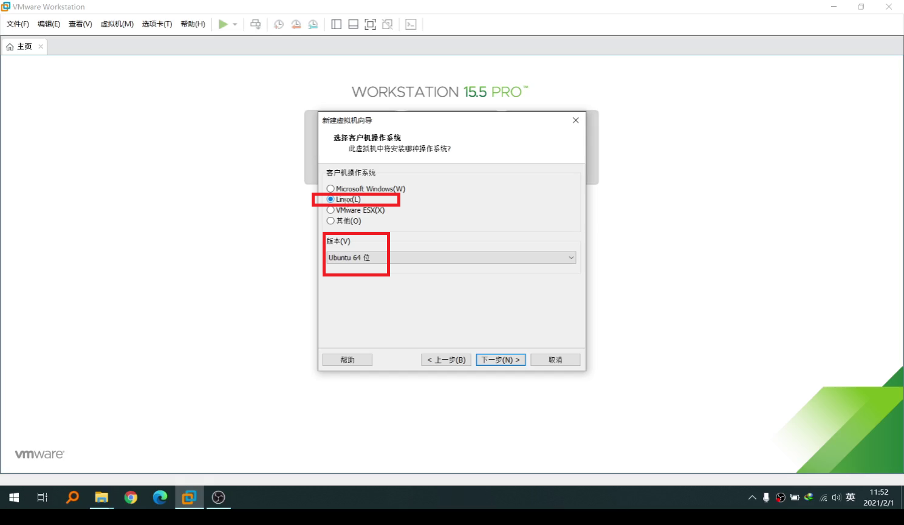
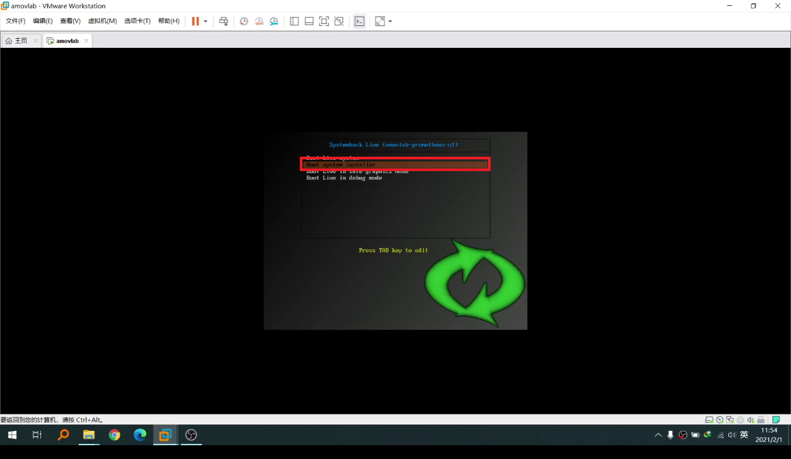

仿真环境¶
注意
如果您不想自己安装下面的仿真镜像且迫不及待想运行prometheus仿真，我们有prometheus仿真主机（到手就可以使用）（淘宝链接）
{kind=link}
注解
该仿真系统适配prometheus项目,可以实现功能如上图所示。如果你对prometheus项目感兴趣，不用为仿真环境问题而头疼脑大，让你1个小时跑通prometheus代码。让你快速掌握无人机仿真与无人机实机实验的完美契合；让研发更高效！
注意
本镜像提供了两种安装方式：虚拟机安装和单系统安装
虚拟机安装不用制作启动盘，安装最简单
推荐配置：CPU:i7 6700HQ 内存：16G 硬盘：60G 以上
单系统安装需要制作启动盘，并且保证该电脑的硬盘数据备份
推荐配置：CPU:i7 6700HQ 内存：8G 硬盘：60G 以上
虚拟机使用¶
如果要在虚拟机中使用prometheus镜像，一种是Windows下面的vmware虚拟机使用，另外一种是Ubuntu下面的Oracle VM VirtualBox使用
VMware¶
默认已经安装好vmware虚拟机，如果没有安装过vmware虚拟机，请先下载安装，点击此处 下载地址 ， 安装vmware问题，可自行百度搜索，在此不做详细说明。
新建一个虚拟机¶
.png){kind=link}
小技巧
客户端操作系统：Linux
版本：Ubuntu 64位
.png){kind=link}
小技巧
虚拟机名称：amovlab
位置：f: \amovlab
.png){kind=link}
小技巧
最大磁盘大小：30GB
勾选将虚拟磁盘拆分成为多个文件
.png){kind=link}
点击自定义硬件按钮
.png){kind=link}
.png){kind=link}
.png){kind=link}
小技巧
推荐内存大小8G以上 （此处是分配的4G，编译比较费时）
处理器数量4个以上（根据自己电脑调节）
网络适配器：桥接模式
安装镜像¶
.png){kind=link}
选择第二项（Boot system installer）
.png){kind=link}
输入用户名和新主机名，点击下一步
.png){kind=link}
- 分区配置
删除原有分区
分区方式如下表
注意：一定要勾选
transfer user configuration filesinstall GRUB2 bootloader：Auto
警告
删除原有分区表的时候一定要谨慎！！！！
分区 |
容量 |
挂载点（mount point） |
|---|---|---|
第一个分区 |
0.5G |
|
第二个分区 |
4G |
|
第三个分区 |
剩余大小 |
|
点击
next，开始安装系统
.png){kind=link}
注意
安装过程中会虚拟机会黑屏，请耐心等待安装完成
演示视频¶
单系统使用¶
所谓单系统使用，一般你有台崭新的电脑，想让该电脑完美无暇的跑通prometheus仿真功能demo，你可以参考prometheus镜像在单系统中使用。 该系统一般都是在Windows下做好启动盘，进而给电脑装新的系统。大概需要一下几个步骤：
工具准备¶
Rufus软件：http://rufus.ie/
U盘一个，推荐USB3.0的接口，容量16G以上：
prometheus 镜像文件
启动盘制作¶
{kind=link}
{kind=link}
演示视频¶
系统安装¶
开机启动选择U盘启动 如图所示：
{kind=link}
选择第二项（Boot system installer）
{kind=link}
输入用户名和新主机名，点击下一步
{kind=link}
警告
删除原有分区表的时候一定要谨慎！！！！
分区 |
容量 |
挂载点（mount point） |
|---|---|---|
第一个分区 |
0.5G |
|
第二个分区 |
8G |
|
第三个分区 |
剩余大小 |
|
点击
next，开始安装系统
{kind=link}
耐心等待安装完成
演示视频¶
如果遇到NVMe固态硬盘读取不了的情况！¶
小技巧
首先进入SystemBack 系统，打开GParted分区软件
新建三个分区(此处只做分区不做挂载)：第一个分区大小：0.5G ,第二个分区分区大小：8G，第三个分区大小：>50G
然后打开终端：输入
sudo ln /dev/nvme0n1 /dev/sddsudo ln /dev/nvme0n1p1 /dev/sdd1sudo ln /dev/nvme0n1p2 /dev/sdd2sudo ln /dev/nvme0n1p* /dev/sdd*以此类推
如果有Ubuntu更新报错或者系统报错弹窗，请关闭！！！
打开SystemBack 点击系统安装，这个时候会发现NVMe固态硬盘已经可以显示了，之后的操作跟之前的一样的。
Prometheus镜像快速使用¶
按照上述三种方式安装好prometheus系统镜像之后，你可以在桌面上看到prometheus镜像快速入门文档，或者参考该部分文档。
第二步,下载编译¶
下载prometheus_px4:¶
打开一个终端(ctrl+alt+t),执行如下的下载指令:
git clone https://gitee.com/amovlab/prometheus_px4.git
编译prometheus_px4:¶
进入到 prometheus_px4 路径之下,先更新子模块,再编译软件在环代码,指令如下:
cd prometheus_px4/
make submodulesclean 更新子模块,时间稍微久一点(5 分钟)(或者使用 git submodules update --init
--recursive)
make amovlab_sitl_default 编译指令
编译Prometheus代码:¶
进入到 Prometheus 代码目录之下,执行编译指令如下:
cd Prometheus/
./compile_all.sh
如果下载编译均正常执行完成,至此,恭喜你,下载编译执行非常好,所打开的终端也可以全 部关闭。
第三步、测试系统是否正常¶
测试prometheus_px4¶
打开一个新的终端,进入到 prometheus_px4 路径之下,运行启动 gazebo 仿真,指令执行 如下:
roscd px4/
make amovlab_sitl gazebo_p450
如果顺利打开了 gazebo,并有 p450 模型的加载,就表示正常,使用 ctrl+c 关闭终端。
随后打开一个新的终端,利用 roslaunch 启动启动 gazebo+mavros+prometheus_px4 仿真, 运行指令如下:
roslaunch px4 mavros_posix_sitl.launch
如果顺利打开了 gazebo,并有 p450 模型的加载,就表示正常,使用 ctrl+c 关闭终端。
可以进行 Prometheus 的测试啦!
测试Prometheus¶
prometheus 的正常运行是依赖 prometheus_px4 的正常运行,打开一个新的终端,执行指 令如下:
roslaunch prometheus_gazebo sitl_control.launch
等待 gazebo 和 rviz 全部正常启动之后,在终端中如果选择 0 进入终端指令操控,根据终 端指令提示,可以进行 Prometheus 系统的仿真了。
如果都没有问题,恭喜你,prometheus 镜像的快速入门你已经掌握了,了解更多的功能吧。
小技巧
Ubuntu下安装deb软件包的方式
输入
sudo dpkg -i xxx.deb